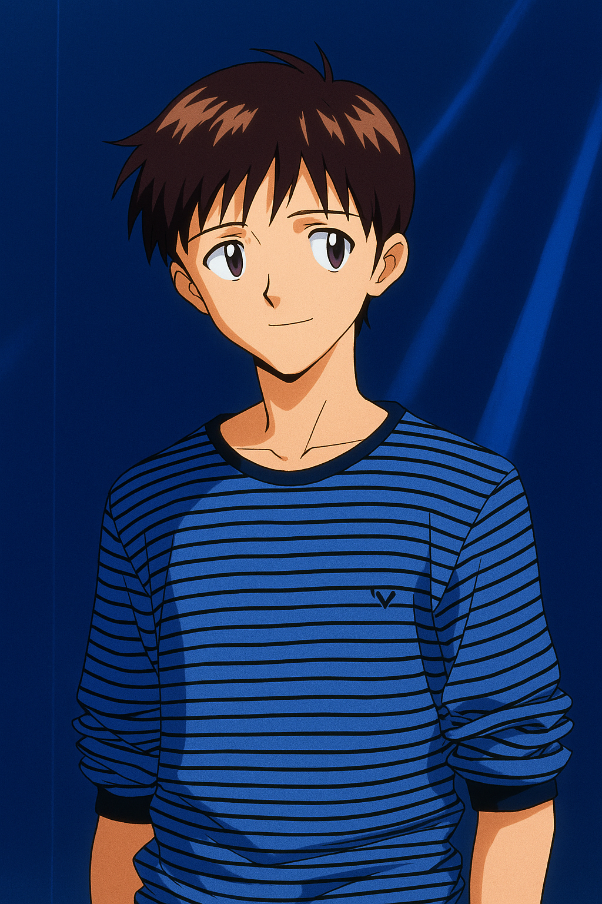

¿Por qué Evangelion?
Esta serie aborda una gran variedad de temas filosóficos, religiosos y existenciales, y hace un amplio uso de símbolos tradicionales para presentarlos. Se exploran conceptos de la teoría freudiana como el "yo", el "superyó" y la "sombra", así como la soledad, el aislamiento, el sentido de la existencia y nuestra condición como seres humanos libres. La profundidad, la elaboración de cada personaje y el clima nostálgico e introspectivo que la serie va construyendo hicieron que conectara profundamente con ella en el momento en que la vi, y que me sintiera reflejado o interpelado por muchas de las cuestiones que plantea su trama.